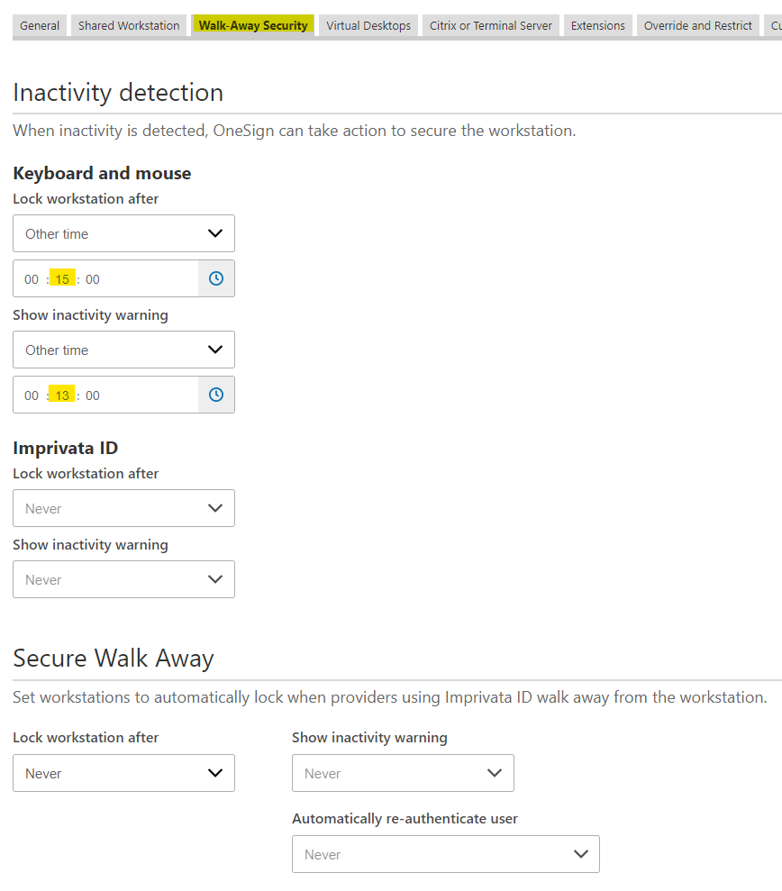
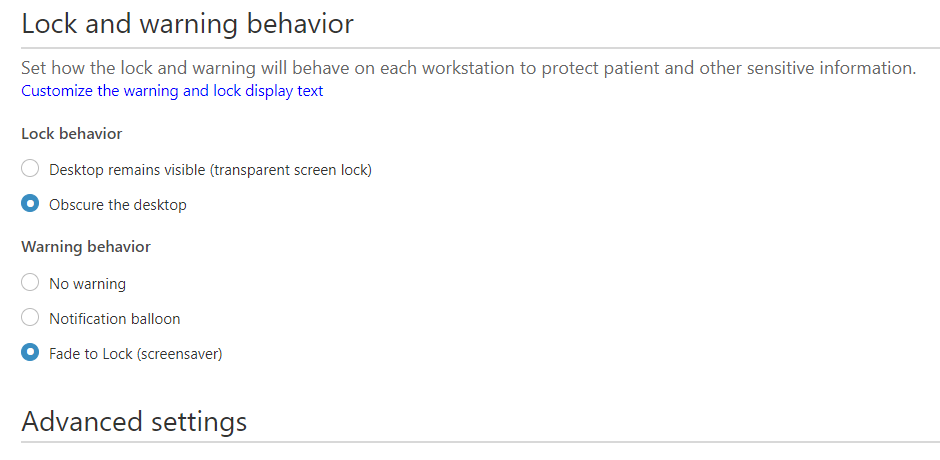
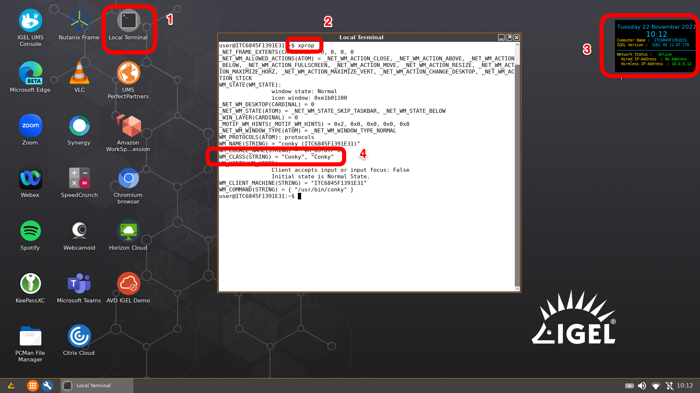

HOWTO Imprivata Notes
IGEL Knowledge Base -- Imprivata
IGEL Knowledge Base -- Imprivata Articles
Collect Imprivata Log Files
Where are the log files?
The the log files for Imprivata ProveID Embedded agent are located in:
/.imprivata_data_runtime/log
NOTE: Need to be root to access
Steps to collect the log files (as root)
1 2 3 4 | |
Change Imprivata ReadTimeout and WriteTimeout
Steps to change ReadTimeout and WriteTimeout
Edit Imprivata.conf file to reduce the Failovertime from 8 minutes to one minute.
Create a profile and add the following command to custom commands - Desktop - Before desktop starts:
1 | |
Note: A reboot is required after applying profile
Allowing an Application Window Atop the ProveID Embedded Lock Screen
You may want to allow an application window to appear on top of the Imprivata ProveID Embedded lock screen on some endpoints.
For example, you may want a VNC (Virtual Network Computing) prompt used for remote control of an endpoint, or an IGEL setup menu, to be available while an endpoint is locked. To allow this, you must specify in a lock screen access list any application windows that you want to appear atop the lock screen. This requirement ensures that undesired application windows stay off the lock screen and avoid exposing Protected Health Information (PHI) or Personally Identifiable Information (PII).
NOTE: If you used ProveID Embedded configuration options focus-on-overlap and unmap-popup-windows to allow or to prevent application windows or pop-ups atop the lock screen in OneSignConfirm ID 7.3 through 7.6, then starting with OneSignConfirm ID 7.7, you must instead use the procedure described below. Configuration options focus-on-overlap and unmap-popup-windows are no longer supported. If they remain in the imprivata.conf configuration file on an Imprivata ProveID Embedded endpoint, they are ignored.
Procedure Overview
To enable an application window to appear atop the Imprivata ProveID Embedded lock screen, you first get one, two, or three Windows metadata field values for that application's display window to uniquely identify that window. You then enter one or more of those values in a page of the Imprivata Admin Console and then reboot your ProveID Embedded endpoints.
There are two ways to get the metadata field values for an application window from an Imprivata ProveID Embedded endpoint: from a log file or by using the xprop utility. Read both methods described below and choose one to do.
Getting Metadata Field Values for an Application Window from a Log File
To get the metadata field values from a log file, follow this procedure on one Imprivata ProveID Embedded endpoint:
- Enable logging of application window activity. Set ProveID Embedded configuration option
log-activity = Truein the [windows.monitor] section of the Imprivata.conf configuration file. Edit the Imprivata.conf file located in /imprivata folder:1 2
[windows.monitor] log-activity = True - Launch the application that you want to appear above the Imprivata ProveID Embedded lock screen. This launch should add entries to the Imprivata ProveID Embedded agent log for that application.
- Get or copy the Imprivata ProveID Embedded agent log file at location
/.imprivata_data_runtime/log - Idenity the metadata field values for the target application's window in the log file. Window activity log items contain the string Agent.WindowsActivity. Look for string: Agent.WindowsActivity(_log,1277) - DEBUG: Create window call end. A complete line will look similar to this: 2021-09-03 10:31:53,723 - Agent.WindowsActivity(_log,1277) - DEBUG: Create window call end. ID:"58720259";WMClass:"Vncgui";WMName:"Shadowing on";WMAppInterface:"vncgui"; The application window's WMClass, WMName, and WMAppInterface Windows metadata attributes and values are shown here in boldface. Note that an app window may not have all three attributes.
- Make note of the metadata field values and go to Adding Metadata Field Values to the Admin Console and Rebooting Endpoints.
Getting Metadata Field Values for an Application Window using the xprop Utility
To get the metadata field values for an application window by using the xprop utility, follow this procedure on one Imprivata ProveID Embedded endpoint: 1. Run export DISPLAY=:0; 2. Run xprop; A special crossed cursor will appear on the screen. 3. Select the window of the application you want to appear above the lock screen. A full list of the window's attributes should be displayed, as shown in this example for an IGEL setup window:
root@ITC00E0C5217062:~# export DISPLAY=:0
root@ITC00E0C5217062:~# xprop
_NET_WM_ALLOWED_ACTIONS(ATOM) = _NET_WM_ACTION_CLOSE, _NET_WM_ACTION_ABOVE, _NET_WM_ACTION_BELOW, _NET_WM_ACTION_FULLSCREEN, _NET_WM_ACTION_MOVE, _NET_WM_ACTION_RESIZE, _NET_WM_ACTION_MAXIMIZE_HORZ, _NET_WM_ACTION_MAXIMIZE_VERT, _NET_WM_ACTION_SHADE, _NET_WM_ACTION_MINIMIZE, _NET_WM_ACTION_CHANGE_DESKTOP, _NET_WM_ACTION_STICK
WM_STATE(WM_STATE): window state: Normal
icon window: 0xcce8f200
_NET_WM_DESKTOP(CARDINAL) = 0
_NET_WM_WINDOW_TYPE(ATOM) = _NET_WM_WINDOW_TYPE_NORMAL
_MOTIF_WM_HINTS(_MOTIF_WM_HINTS) = 0x3, 0x1, 0x1, 0x0, 0x0
_MOTIF_DRAG_RECEIVER_INFO(_MOTIF_DRAG_RECEIVER_INFO) = 0x6c, 0x0, 0x5, 0x0, 0x7, 0x0, 0x20, 0x4, 0x0, 0x0, 0x0, 0x0, 0x10, 0x0, 0x0, 0x0
XdndAware(ATOM) = BITMAP
_NET_WM_STATE(ATOM) = _NET_WM_STATE_FOCUSED
WM_HINTS(WM_HINTS):
Client accepts input or input focus: False
Initial state is Normal State.
_NET_FRAME_EXTENTS(CARDINAL) = 4, 4, 25, 4
_NET_WM_ICON(CARDINAL) = Icon (32 x 32):_NET_WM_PID(CARDINAL) = 918159
WM_CLIENT_MACHINE(STRING) = "ITC00E0C5217062"
WM_PROTOCOLS(ATOM): protocols WM_DELETE_WINDOW, WM_TAKE_FOCUS
WM_CLIENT_LEADER(WINDOW): window id # 0x4200008
_NET_WM_ICON_NAME(UTF8_STRING) = "IGEL Setup 11.05.133.01 (Build 6.7.5)"
WM_ICON_NAME(STRING) = "IGEL Setup 11.05.133.01 (Build 6.7.5)"
_NET_WM_NAME(UTF8_STRING) = "IGEL Setup 11.05.133.01 (Build 6.7.5)"
WM_NORMAL_HINTS(WM_SIZE_HINTS):
user specified location: 107, 141
program specified location: 107, 141
program specified size: 1398 by 757
window gravity: NorthWest
WM_CLASS(string) = "WMAppInstance", "WMClass"
So in the example line from above, WM_CLASS(STRING) = "sun-awt-X11-XFramePeer", "IGEL Setup"
the value sun-awt-X11-XFramePeer is a WMAppInstance window attribute and IGEL Setup is a WMClass window attribute. Similarly, WM_NAME string value IGEL Setup 11.05.133.01 (Build 6.7.5) is a WMName window attribute. Note that an app window may not have all three attributes.
5. Make note of the metadata field values and go to the next section, Adding Metadata Field Values to the Admin Console and Rebooting Endpoints.
Adding Metadata Field Values to the Admin Console and Rebooting Endpoints
To add the metadata field values for the application window to the Admin Console: 1. In the Admin Console, select the gear icon and then in the drop-down menu, select ProveID Embedded. A ProveID Embedded page opens, showing Lock screen access. 2. Select Add application. A Lock screen access: add application page opens. 3. Enter an application name in the Application nickname field. This field simply identifies the entry in the lock screen access list. 4. Enter in one or more of the Name, Class, and App instance fields the metadata values you found using either Getting Metadata Field Values for an Application Window from a Log File or Getting Metadata Field Values for an Application Window using the xprop Utility.
-
4a. For the App instance field, enter the
WMAppInterfaceor theWMAppInstanceattribute you found, depending on which discovery method you used. Those two slightly different log entry names identify the same attribute. -
4b. Entering metadata values in two or three fields, rather than in only one field, can help ensure that only the desired application window is allowed atop the lock screen.
-
4c. No error checking occurs for the field values. If you enter an incorrect value, the Admin Console accepts it, but the system does not allow the desired window above the lock screen.
- 4d. If you enable Allow access to all variants of this application, this implements a match to any application window on the endpoint whose Windows metadata fields contain the field values you specify. If you enable this option, be careful to ensure that you do not get undesired windows appearing atop the lock screen. If you don't enable this option, exact matches are required for the field values you specify.
Click Save.
- Reboot your ProveID Embedded endpoint to cause the new configuration value to take effect for that endpoint.
-
Test viewing the application window atop the Imprivata ProveID Embedded lock screen on that endpoint:
-
6a. If the application is a native application, trigger the Imprivata ProveID Embedded lock screen and then launch the application using a hotkey or some other method. You cannot launch native apps from the ProveID Embedded agent interface.
-
6b. If your application is virtual, launch the application and then trigger the Imprivata ProveID Embedded lock screen. The application should stay atop the lock screen.
-
6c. If it does not, review the metadata field values where you obtained them and in the Lock screen access list in the Admin Console. If needed, obtain fresh metadata field values. Correct any errors in the metadata values in the Admin Console. Then return to step 5. If one or more undesired application windows appear atop the lock screen, deselect checkbox Allow access to all variants of this application if it is checked. Then return to step 5.
-
Reboot all other Imprivata ProveID Embedded clients for which you want the new configuration value to take effect, for example, all Imprivata ProveID Embedded clients at a site or in the enterprise.
-
If you enabled logging of application window activity on one Imprivata ProveID Embedded endpoint in Getting Metadata Field Values for an Application Window from a Log File, disable that logging. Reset configuration option log-activity to false in the [windows.monitor] section of the imprivata.conf configuration file on that endpoint.
How to get misc apps accessible in Imprivata appliance mode (appliance mode checkbox doesn’t work anymore).
Look for the WMClass etc..
Values to add in exceptions list on the Imprivata aplliance.
Edit the Imprivata.conf file located in /imprivata folder.
[windows.monitor]
log-activity = True
Tip: use tail to look for WMCLass in the log file:
tail -f /usr/lib/imprivata/runtime/log/OneSignAgent.log | grep WMClass
The xprop method requires the following two exceptions:
Application Nickname: IGEL Screensaver 1
Name (WMName): screensaver
Class (WMClass): ScreenSaverD
App instance (WMAppinstance): screensaverd
Application Nickname: IGEL Screensaver 2
Name (WMName): igel_screensaver
Class (WMClass): Igel_screensaver
App instance (WMAppinstance): igel_screensaver
28 December 2022 - Update
Imprivata has finished the qualification of OS 11.08.200 and backed it up to OneSign 7.8 or higher. Any IGEL / Imprivata customer/prospect should skip over 11.07.xx versions and use 11.08.200 or later. 11.08.200 contains fixes for the Persistent App workflow. There are other fixes for the PIE vendor helper script that have had positive results in VMWare environments on older / lower performing hardware.
Combination to test with:
- IGEL OS 11.08.200 +
- Imprivata Appliance version 7.9 HF3
- Imprivata PIE Agent 7.9.003.0039
8 September 2022 - Using default directory rules with appliance mode
An issue may occur when using default directory rules with appliance mode, where appliance mode starts, but Imprivata does not start. This also occurs with all the other appliance modes, but most frequently comes up with Imprivata. The following profile can be assigned to the default directory, and then Imprivata (or other session) will start normally. This makes the device reboot one extra time, but the reboot happens automatically. This may be resolved by IGEL in a future release of IGEL OS, but the root cause has not yet been identified.
LINK to Imprivata Appliance Mode DDR Workaround Profile
22 August 2022 - Unable to access OS feature menus after upgrading the Linux thin clients to PIE 7.7 and above
-
Issue: After upgrading the IGEL clients with ProveID Embedded 7.7 we are unable to access the menus from the IGEL OS, preventing our users to accessing the Display Switch and Sound Settings functionality.
-
Cause: This is caused by a security feature that has been implemented in Imprivata 7.7 that hides any application that tries to be displayed on top of the PIE lock screen if it hasn't been previously allowed.
-
Resolution: In order to allow an application to be displayed on top of the PIE lock screen, some information will need to be collected previously for the PIE agent to detect this screen correctly.
- The fastest way to collect this information is to exit the PIE agent by pressing Ctrl + Power Menu Arrow Up, this should display the option to Exit the PIE agent. Please note that the Computer Policy applied to this Linux Thin Client will need to allow the users to exit the OneSign agent.
- Once the PIE agent has been exited, the Linux Thin Client lock screen will be shown, we should now be able to invoke the desired OS feature (Display Switch, Sound Settings), launch the desired menu that needs to be allowed and then SSH with root access to the Linux device.
- In the SSH session, execute the following two commands to start gathering the information about the window menu that needs to be allowed, when this is executed the cursor will change to a cross symbol.
1 2
export DISPLAY=:0 xprop- Click on the desired window, and then collect the following information from the SSH session, note that many more lines will be shown.
1 2
WM_CLASS(STRING) = "sun-awt-X11-XFramePeer", "IGEL Setup" WM_NAME(STRING) = "IGEL Setup 11.05.133.01 (Build 6.7.5)"- Please note that the above information is only an example.
- With the information gathered, navigate to the Imprivata Admin Console, and then on the Gear icon, select the ProveID Embedded option. In this menu you will have the option to create an allowed application with the information gathered.
- For more detailed information on the above steps or different methods to gather this information, please visit the Imprivata Documentation regarding this functionality on the page below: Allowing an Application Window Atop the ProveID Embedded Lock Screen
Sample setup of Imprivata with a screensaver that locks
The screensaver settings are in the Imprivata Appliance Computer Policy set for IGEL ProveID devices.
Steps:
- First make sure the IGEL devices have NO screensaver set (either via a Screen Saver Policy or Firmware Customization)
- Enable Imprivata Appliance Mode via a Policy
- Have Imprivata administrator edit the IGEL Computer policy to set the following in the Walk-Away Security section (see screenshots below)
Note: This example is a screensaver that hides the screen at 2 minutes, and locks at 15 minutes.


Getting Metadata Field Values for Conky Window using the xprop Utility

Steps:
- Open a terminal window as user and run
xprop - Move the mouse cursor over the
Conkywindow andclick mouse button
Output from xprop on Conky window:
_NET_FRAME_EXTENTS(CARDINAL) = 0, 0, 0, 0
_NET_WM_ALLOWED_ACTIONS(ATOM) = _NET_WM_ACTION_CLOSE, _NET_WM_ACTION_ABOVE, _NET_WM_ACTION_BELOW, _NET_WM_ACTION_FULLSCREEN, _NET_WM_ACTION_MOVE, _NET_WM_ACTION_RESIZE, _NET_WM_ACTION_MAXIMIZE_HORZ, _NET_WM_ACTION_MAXIMIZE_VERT, _NET_WM_ACTION_CHANGE_DESKTOP, _NET_WM_ACTION_STICK
WM_STATE(WM_STATE):
window state: Normal
icon window: 0xe1b01100
_NET_WM_DESKTOP(CARDINAL) = 0
_NET_WM_STATE(ATOM) = _NET_WM_STATE_SKIP_TASKBAR, _NET_WM_STATE_BELOW
_WIN_LAYER(CARDINAL) = 0
_MOTIF_WM_HINTS(_MOTIF_WM_HINTS) = 0x2, 0x0, 0x0, 0x0, 0x0
_NET_WM_WINDOW_TYPE(ATOM) = _NET_WM_WINDOW_TYPE_NORMAL
WM_PROTOCOLS(ATOM): protocols
WM_NAME(STRING) = "conky (ITC6845F1391E31)"
WM_LOCALE_NAME(STRING) = "en_US.UTF-8"
WM_HINTS(WM_HINTS):
Client accepts input or input focus: False
Initial state is Normal State.
WM_CLIENT_MACHINE(STRING) = "ITC6845F1391E31"
WM_COMMAND(STRING) = { "/usr/bin/conky" }
Tips / Notes
Location of the configuration file: /usr/lib/imprivata/runtime/etc/Imprivata.conf
Edit the file with nano editor: nano /usr/lib/imprivata/runtime/etc/Imprivata.conf
1 2 | |
Monitor the log file: tail -f /usr/lib/imprivata/runtime/log/OneSignAgent.log
FAQ
Q: What is the best method to lock display?
A: Use Imprivata’s fade to lock functionality rather than configuring the screensaver on the local IGEL OS - you can configure this from the IGEL computer policy OR VM computer policy
Q: How to verify the Imprivata Appliance Certificate
A: IGEL supports the Imprivata appliance cert(s) in either the .crt or .cer format. Newer appliances often download as a .crt. When uploading the certificate to UMS, make sure to select the file as "SSL Certificate". Once the certificate is deployed to the device, it will install in the /wfs/ca-certs directory. On the device the certificate can be verified by opening a terminal window and running the following command cd /wfs/ca-certs; openssl verify ssoCA.crt or cd /wfs/ca-certs; openssl verify ssoCA.cer
Q: How to reset device in appliance mode if the agent installation is no longer working?
A: Steps: (1) In UMS, move the device to a directory where the Imprivata appliance mode is disabled; (2) Then reboot - The reboot makes sure the old Imprivata data partition is gone; (3) Move the device back into the directory to re-enable the Imprivata Appliance mode.
Q: When using multiple monitors with Imprivata PIE agent (appliance mode), how to keep login screen on specific monitor?
A: By default the login screen will show on the default display (1 if you are using a profile). You can set the default display in DisplaySwitch or by forcing 1 to be output via a specific video card / port (Card 1, HDMI 1).
Q: How to exit Imprivata agent to go to IGEL configuration screen?
A: Steps to setup
- Login to OneSign Admin UI
- Go to Computer Policies tab and select computer policy assigned to IGEL (ProveID Embedded) client
- In the General section, scroll down to
Authentication - Select
YestoAllow Users to Exit and Disable Agent
Once the above option is enabled in computer policy (sync and reboot IGEL device(s)) you can right click on turn off button right hand side of the screen:
- Hold down Ctrl and right click on the power button